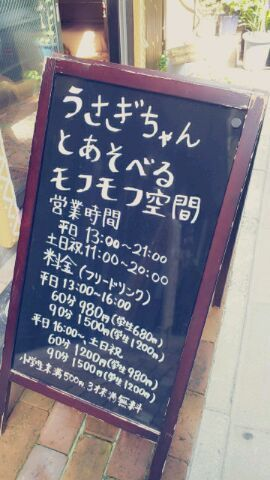

| 2012/09 29 Sat | 川村真洋 握手会中の更新だべ。♪ろってぃ ー |
ほっほーーい♪
ろってぃーでぃす。
ぴぃーーす。 (・ω・*)
今日は 名古屋にやって参りましたっ☆
名古屋にてっ,
個別握手会でしっ!!(・ω・)
今回もまた
皆が今 握手やっている裏からの
更新・∀・。
今は 一部の途中だぉ。
さっきまで
学校の宿題やってたよん♪
早く皆様と握手がしたいっ〃ω〃
待っとくね*・∀・)
見て見てぇ〜(⌒‐⌒)
大阪の梅田を
お散歩していると
かわいいお店見つけたの♪

『うさぎちゃんと遊べる
モフモフ空間*・ω・*』
思わず写真とっちゃったよ。
お店の中のぞいたら
かわいいおばあちゃまが
うさぎさん♪と楽しんでた´ω`))
かわいかった〃∀〃
実は 大阪の握手会が
終わったあと実家に
帰ったんだよっ♪
そのことは
次のblogに書きます(^-^)
ではではっ
質問返ししちゃいますっ・∀・´
★やっぱり最近
爆発的に綺麗になってない?
☆本間にいっ・_・?
それはめっちゃ
嬉しい気持ちやわぁ〜,
サンキューでぇす!
★名古屋、バス移動は
流石に疲れたんぢゃない?
☆ああ,,,
首がこっちゃう!
でも大丈夫よっ・∀・
疲れないよん。
★あみあみ...
Rottyの腕かむって
歯の生えかわりで
くすぐったいのかな?
☆そうなのかなあ〜?
だからかあっ・ω・!
全然きずいてあげられなかったようっ 笑
★ろってぃーとひめたんて
歳の差 １つだよね?
ろってぃーが大人っぽいのかな?
ひめたんが幼く見えるのかな?
☆そうだねぇ〜
全身を見るとひめかの方が全然
身長高いけどこうやって
写メで顔だけ見ると
ひめかは目がクリクリして
お人形ちゃん♪みたいだから
幼く見えるのかねえっ*´ω`*
★ホテル一緒に泊まるの
ひめたんが多くない?
☆そおですねえっ!!
多いわっ)))
喜ばしいことやなあ。
★さすがオシャレ番長、
なあちゃんとどっちセンスある?
☆サンキューです(・∀・`)
ななせもかわいらしい服
着てますよねっ♪
まひろ 小さい頃から
本間にオシャレすることが好きで
だからと言って
やらしい感じになったりは
したくなかったので
変に大人びた子供とかでは
なかったですよん・ω・))
ダンスの衣装なんかも
ダンスの先生に頼まれて
まひろとまひろマザーで
考えたりしてたよん(・ω・)♪
★一度チーム分けして
シングル同時発売で
対決するってのは
出来ないんでしょうか?
☆ねっ*^^*
どんなことがいつ急に
発表されるか分かんないから
ありえなくもないよね。
★まひろはさ、
まひろファンの、呼び方
作らないの?
チーム○○ ・ ○○fam
・ ○○家族 ・ ○○キュン
って感じのやつね。
☆おっ！ いいねえ。
つくっちゃうぅw?
ほなまひろも募集しちゃおっかな♪
★風邪ひいてない?
喉とか大丈夫?
☆全然大丈夫ですよっ・∀・´
心配してくれて
サンキューです。
★スカパーアワード授賞式
お疲れ様です^ω^
楽しかった?
☆お疲れ様です^^
楽しかった楽しかったー。
最後 どなたか
『ろってぃー)))!!!』って
叫んでくれたでしょう?
ばっちし聞こえたお。
嬉しかったよー★
★秋祭り行きたくない?
☆祭り... 行きたいねぇ〜
夜の気温も調度いいし
いい気持ちだろうね。
★握手会,
実際 目の前にすると
緊張して頭真っ白に
なっちゃうんだけど
どーすればいい?
☆ぁあ〜 そーゆう場合は
おもいきって
真っ白になっちゃおうぜいっ☆笑!!
★ろってぃーはライブ中の
ハプニング起きたことある〜?
☆マイクがとれてしまうとか...
あと 中にはいてる黒パンがおしり様...
踊っていると pkってやつに...
★アイアンマンマスク被って
握手会に来る、
痛いファンってどう思う?
真洋chan?
☆全然いたくないっすぅ〜(⌒‐⌒)
面白いしインパクト強いし
こっちまで楽しい気分になるでし。
★名古屋全握の時
SKEのメンバーと会話した?
☆挨拶だけ全員並んで
やらせて頂きました。
ではっ、今日も１日
頑張ぁぁ〜〜?
ろってぃー(・∀・)
よろしくお願いいたします。^^)>
のし。